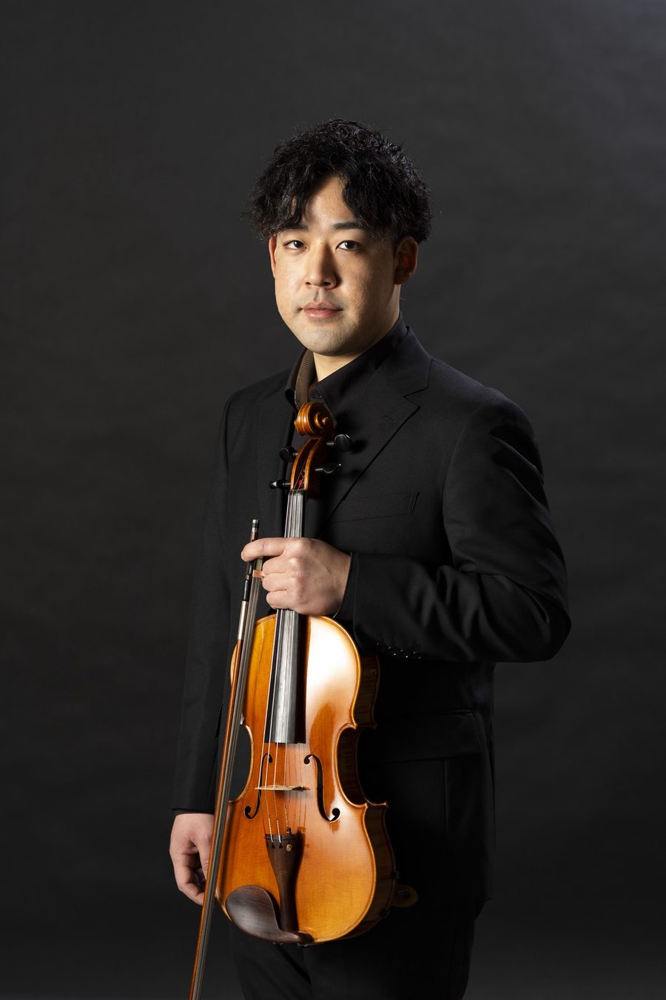

Viola
藤田 友喜
4歳よりヴァイオリンを始め、大学3年次よりヴィオラの演奏を始める。福島県立橘高等学校、福島大学音楽科、及び福島大学大学院音楽科卒業。
2016年にベルリンフィルハーモニー管弦楽団の元首席奏者である、ライナー・モーク氏のマスタークラスを受講。また、2016年より、毎年に渡りウィーンを訪れ、ウィーン音楽大学教授であるゲオルク・ハーマン氏のプライベートレッスンを受ける。
2019年7月から10月にかけて仙台フィルハーモニー管弦楽団の演奏会に客演奏者として出演。現在は、フリーランスとして、オーケストラや室内楽の演奏会に出演するなど演奏活動を行う。
2019年より藤田ヴィオラ・ヴァイオリン教室を主宰し、全日本ジュニアクラシック音楽コンクールの審査員を務めるほか、福島高校、福島県立医科大学、醸芳小学校の部活指導を行うなど、後進の指導にも力を入れている。
これまでにヴァイオリンを保井頌子、ヴィオラを井野邊大輔、室内楽を金谷昌治、各氏に師事。